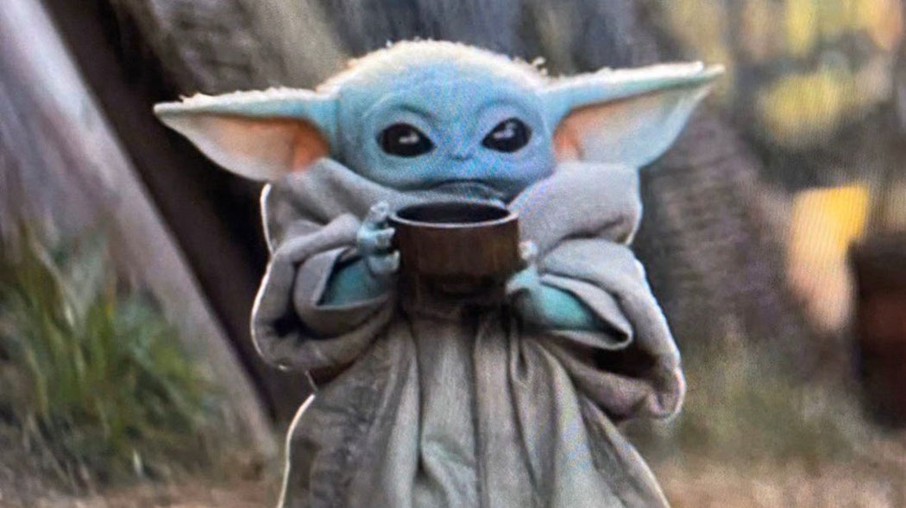

About Baby Yoda
A little green life form who has been cutified by the new Star Wars' series "Mandalorian". He must be saved from the evil Guild, but does not actually need that much help.
Characteristics
- He's cute
- He's powerful
- The force strong in him is

This is Baby Yoda in action